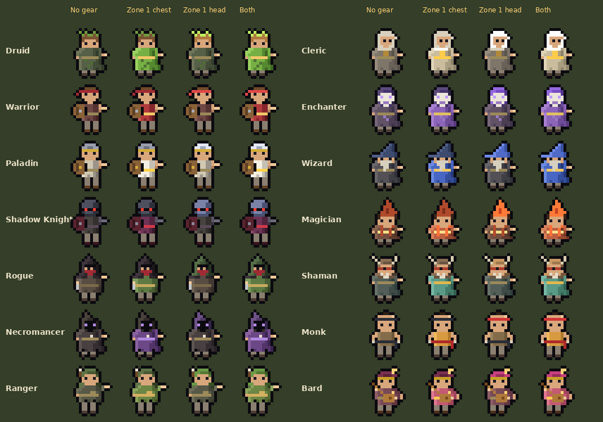

Your notes: v0.142 was "pretty much nothing", so this pass goes from washed-out rags to each class's own colour, brighter and easier to read, plus a gold or class-colour trim on the belt or sash. Wizard is your pick B, Warrior your pick C (bright red); the other 12 follow the same rule. Not in the game yet.

Shown 5×. Each class: no gear, chest only, head only, both.
For each class: keep, brighter, toned down, or a different colour. Anything not mentioned I'll keep as drawn, then build it into the game in one go.
Weapon pace (weapons reach their biggest shape in Zone 1), shields changing with gear, and when capes arrive.
Next zones add one small detail each, in the order of the look ladder (hat bobble, belt, trim and so on).